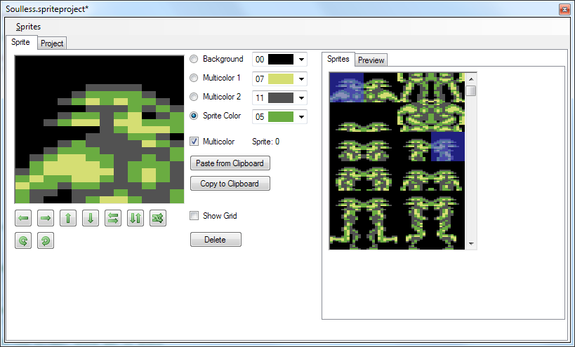
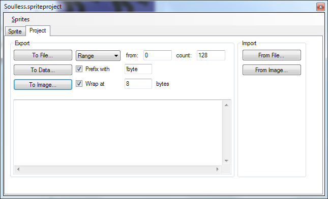
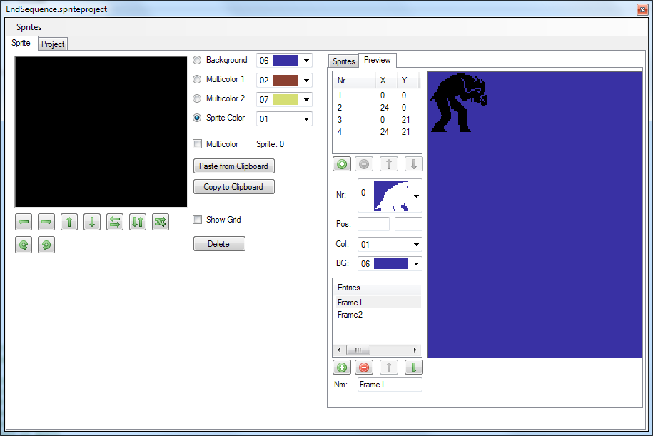

Sprite Editor - Editor Pane
The sprite editor supports editing a set of up to 256 sprites. Both single color and multi color are supported. Sprites can be
directly modified, flipped horizontally and vertically as well as copied and pasted to/from the clipboard.

Selection
You can select a single sprite by left clicking, a range by shift-left clicking or a rectangular selection by alt-left clicking. If copied and pasted from the clipboard the copied selection style will matter when inserting.
Copy to Clipboard
The images are written to the clipboard as 8 bit indexed files where the first 16 colors are set in the palette.
Paste from Clipboard
Like wise any images from the clipboard are expected to be 8 bit indexed. The size does not matter, images will also be pasted partially and overlapping into the neighbouring sprites.
Pasting an image also will try to map to the currently set multi color colors. If the pasted image does not meet the expectations (eg. too many colors) the
paste will be skipped. This means, for a successful paste you have to set the proper multi color colors.
Sprite Editor - Project Pane
On the project pane several import/export functions are available.

Generally: Since sprites only use 63 bytes a fill byte is written after the sprite data containing the sprites custom color. If the sprite is set to multi color the MSB is set.
Export to file
Exports the given number of sprites to a binary file.
Export to data
Exports the binary data of the given number of sprites to text. The fields Prefix with and wrap are used to build the resulting text.
Export to image
Exports the given number of sprites as an PNG image.
Import from file
Imports sprites from a binary file. The file is expected to have a size of a multiple of 64.
Import from image
Imports sprites from an image. The image file is expected to to be 8 bit index and have a size of a multiple of 24 horizontally and 21 vertically.
Sprite Editor - Preview
The layer editor lets you arrange sprites to see what they look like combined or overlapped.

On the top left is the list of sprites in the current frame. Position and color sprites as you see fit.
On the bottom left is the list of frames. A frame is a constellation of sprites. This allows to test simple animations.